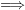
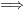

| Up | Next | Prev | PrevTail | Tail |
This package allows the user to set up automatically a consistent environment for computing in an algebra where the non–commutativity is defined by Lie-bracket commutators. The package uses the REDUCE noncom mechanism for elementary polynomial arithmetic; the commutator rules are automatically computed from the Lie brackets.
Authors: Herbert Melenk and Joachim Apel.
REDUCE supports a very general mechanism for computing with objects under a non–commutative multiplication, where commutator relations must be introduced explicitly by rule sets when needed. The package NCPOLY allows you to set up automatically a consistent environment for computing in an algebra where the non–commutativity is defined by Lie-bracket commutators. The package uses the REDUCE noncom mechanism for elementary polynomial arithmetic; the commutator rules are automatically computed from the Lie brackets. You can perform polynomial arithmetic directly, including division and factorization. Additionally NCPOLY supports computations in a one sided ideal (left or right), especially one sided Gröbner bases and polynomial reduction.
Before the computations can start the environment for a non–commutative computation must be defined by a call to nc_setup:
where
< vars > is a list of variables; these must include the non–commutative quantities.
< comms > is a list of equations <u>*<v> - <v>*<u>=<rh> where < u > and < v > are members of < vars >, and < rh > is a polynomial.
< dir > is either left or right selecting a left or a right one sided ideal. The initial direction is left.
nc_setup generates from < comms > the necessary rules to support an algebra where all monomials are ordered corresponding to the given variable sequence. All pairs of variables which are not explicitly covered in the commutator set are considered as commutative and the corresponding rules are also activated.
The second parameter in nc_setup may be omitted if the operator is called for the second time, e.g. with a reordered variable sequence. In such a case the last commutator set is used again.
Remarks:
Example:
Here KK,NN,k,n are non–commutative variables where the commutators are described as [NN,n] = NN, [KK,k] = KK.
The current term order must be compatible with the commutators: the product < u > * < v > must precede all terms on the right hand side < rh > under the current term order. Consequently
If you want to use the non–commutative variables or results from non–commutative computations later in commutative operations it might be necessary to switch off the non–commutative evaluation mode because not all operators in REDUCE are prepared for that environment. In such a case use the command
without parameters. It removes all internal rules and definitions which nc_setup had introduced. To reactive non–commutative call nc_setup again.
A (polynomial) left ideal L is defined by the axioms
u ∈ L,v ∈ Lu + v ∈ L
u ∈ Lk * u ∈ L for an arbitrary polynomial k
where “*” is the non–commutative multiplication. Correspondingly, a right ideal R is defined by
u ∈ R,v ∈ R u + v ∈ R
u + v ∈ R
u ∈ R u * k ∈ R for an arbitrary polynomial k
u * k ∈ R for an arbitrary polynomial k
When a non–commutative environment has been set up by nc_setup, a basis for a left or right polynomial ideal can be transformed into a Gröbner basis by the operator nc_groebner:
Note that the variable set and variable sequence must be defined before in the nc_setup call. The term order for the Gröbner calculation can be set by using the torder declaration. The internal steps of the Gröbner calculation can be watched by setting the switches trgroeb (=list all internal basis polynomials) or trgroebs (=list additionally the S-polynomials) 23.
For details about torder, trgroeb and trgroebs see the REDUCE GROEBNER manual.
Important: Do not use the operators of the GROEBNER package directly as they would not consider the non–commutative multiplication.
The operator nc_divide computes the one sided quotient and remainder of two polynomials:
The result is a list with quotient and remainder. The division is performed as a pseudo–division, multiplying < p1 > by coefficients if necessary. The result {< q >,< r >} is defined by the relation
< c > * < p1 >=< q > * < p2 > + < r > for direction left and
< c > * < p1 >=< p2 > * < q > + < r > for direction right,
where < c > is an expression that does not contain any of the ideal variables, and the leading term of < r > is lower than the leading term of < p2 > according to the actual term order.
For the computation of the one sided remainder of a polynomial modulo a given set of other polynomials the operator nc_preduce may be used:
The result of the reduction is unique (canonical) if and only if < plist > is a one sided Gröbner basis. Then the computation is at the same time an ideal membership test: if the result is zero, the polynomial is member of the ideal, otherwise not.
Polynomials in a non–commutative ring cannot be factored using the ordinary factorize command of REDUCE. Instead one of the operators of this section must be used:
The result is a list of factors of < polynomial >. A list with the input expression is returned if it is irreducible.
As non–commutative factorization is not unique, there is an additional operator which computes all possible factorizations
The result is a list of factor decompositions of < polynomial >. If there are no factors at all the result list has only one member which is a list containing the input polynomial.
In contrast to factoring in commutative polynomial rings, the non–commutative factorization is rather time consuming. Therefore two additional operators allow you to reduce the amount of computing time when you look only for isolated factors in special context, e.g. factors with a limited degree or factors which contain only explicitly specified variables:
where < polynomial > is the form under investigation, < vars > is an optional list of variables which must appear in the factor, and < deg > is an optional integer degree bound for the total degree of the factor, a zero for an unbounded search, or a monomial (product of powers of the variables) where each exponent is an individual degree bound for its base variable; unmentioned variables are allowed in arbitrary degree. The operators *factor stop when they have found one factor, while the operators *factors select all one–sided factors within the given range. If there is no factor of the desired type, an empty list is returned by *factors while the routines *factor return the input polynomial.
The share variable nc_factor_time sets an upper limit for the time to be spent for a call to the non–commutative factorizer. If the value is a positive integer, a factorization is terminated with an error message as soon as the time limit is reached. The time units are milliseconds.
The factorizer internally uses solve, which is controlled by the REDUCE switch varopt. This switch (which per default is set on) allows, to reorder the variable sequence, which is favourable for the normal system. It should be avoided to set varopt off, when using the non–commutative factorizer, unless very small polynomials are used.
It is often desirable to have the commutative parts (coefficients) in a non–commutative operation condensed by factorization. The operator
collects the coefficients to the powers of the lowest possible non-commutative variable.
| Up | Next | Prev | PrevTail | Front |